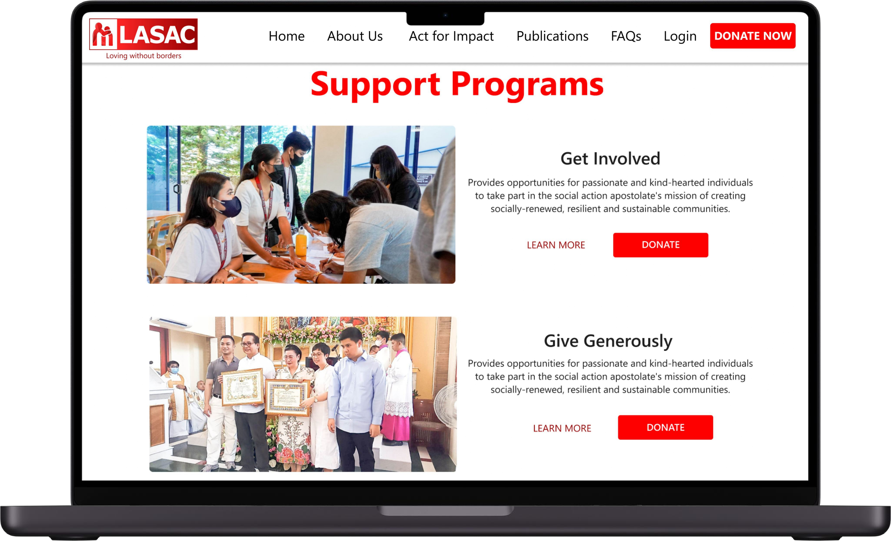
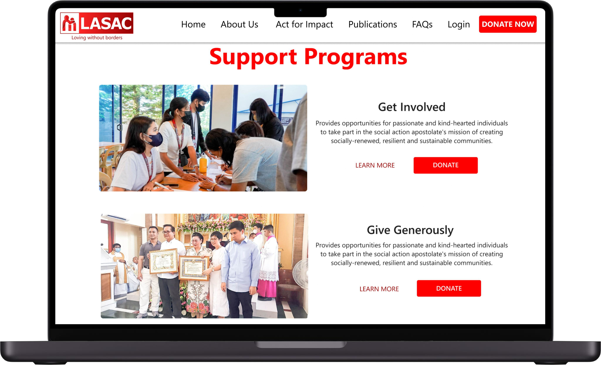

Project Overview
The Lipa Archdiocese Social Action Commission, Inc. (LASAC) aimed to redesign their website's homepage to be visually appealing, user-friendly, and easy to navigate. The organization's mission is to bridge the gap between faith and practice in social justice, focusing on helping the poor achieve both temporal liberation and eternal salvation through the social teachings of the Church. Established in 1967 and registered with the SEC in 1989, LASAC is a licensed non-profit organization by the DSWD, dedicated to humanitarian and development efforts in Batangas.
My Role
In the redesign of LASAC's D'Scroll website homepage, I served as the UI/UX Designer. My role involved conducting interviews to understand the organization's expected outcomes and target audience, analyzing the existing website to identify problems and areas for improvement, and researching various websites for design inspiration. I created wireframes and prototypes using Figma, ensuring the design met user needs and organizational goals. The redesign focused on enhancing visual appeal, ease of use, and navigability to effectively highlight LASAC's mission and services.